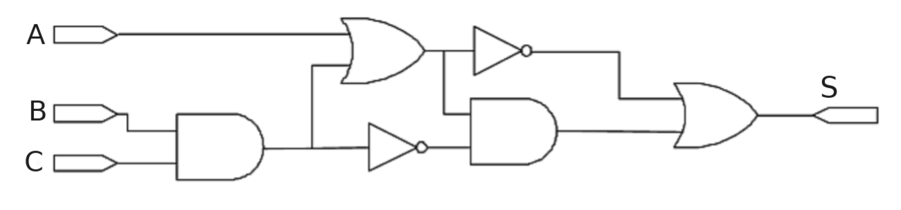

Ejercicio 1
Se desea diseñar un circuito lógico que detecte los números primos comprendidos entre 0 y 15, representados en binario natural. Si el número es primo, la salida debe ser 1 y, si no lo es, debe ser 0. Se pide:
- Obtener la tabla de verdad y su función lógica canónica.
- Obtener la función lógica simplificada y dibujar su circuito con puertas lógicas.
Ejercicio 2
Una máquina selladora por ultrasonidos está gobernada por dos pulsadores y un sensor. Sólo podrá ponerse en marcha si el operario pulsa a la vez los dos botones que hay a ambos lados de la máquina (pulsadores P1 y P2) y un tercer sensor (D) detecta que hay una pieza en la máquina. Se pide:
- La tabla de verdad.
- Un esquema del circuito lógico usando puertas NAND de 2 entradas y otro esquema utilizando puertas NOR de 2 entradas.
Ejercicio 3
Para el circuito digital de la figura, se pide:

Determinar la función lógica S que representa y su tabla de verdad.- Simplificar la función y diseñar el circuito correspondiente con el menor número de puertas lógicas.
Ejercicio 4
En un vehículo de Fórmula 1 se enciende un led (L) de alarma cuando se da al menos una de las siguientes circunstancias:
- Poco combustible (C)
- Alta temperatura en frenos (F)
- Rotura del alerón (A).
Cuando ocurre al menos una de estas circunstancias, el piloto puede activar un pulsador (P) para apagar el led. Éste no se apagará si el sensor que ha activado la alarma es el de rotura del alerón. Se pide:
- La tabla de verdad.
- Simplificar por el método de Karnaugh y obtener el esquema del circuito con puertas lógicas.
Ejercicio 5
Una puerta corredera se mueve mediante dos motores: MA para la apertura y MC para el cierre. Se controla mediante un pulsador para abrirla PA y otro para cerrarla PC, un final de carrera de apertura FA y otro para el cierre FC. Si se mantiene pulsado PA o PC, la puerta se abre o se cierra hasta el final, dejando el motor de funcionar cuando se activa el final de carrera correspondiente. Si se pulsan PA y PC simultáneamente, la puerta se detiene. Se pide:
- Obtener la tabla de verdad y las funciones lógicas de MA y de MC.
- Simplificar por Karnaugh las funciones e implementarlas con puertas lógicas.
Ejercicio 6
Un depósito que contiene un compuesto en estado líquido se ha de dotar de un sistema de alarma. El depósito posee cuatro sensores con dos posiciones lógicas (“1” y “0”) cada uno, utilizándose para monitorizar la temperatura (T), la presión (P), el nivel (N) y el peso (M) del producto contenido. Al valor alto de cada una de las variables se le asigna la posición “1” mientras que al valor bajo se le asigna la posición “0”. Se desea que la alarma actúe cuando se dé cualquiera de estas circunstancias:
- Alta temperatura, bajo nivel y alto peso.
- Alta temperatura, bajo nivel y bajo peso.
- Alta temperatura, alta presión y alto nivel.
- Baja temperatura, alta presión y bajo nivel.
- Obtenga la tabla de verdad de dicho sistema y la función lógica correspondiente.
- Simplifique mediante Karnaugh y obtenga su circuito con puertas lógicas.
Ejercicio 7
Diseñar un circuito digital con cuatro entradas y una salida. La salida es 1 cuando la entrada es múltiplo de cuatro y 0 en caso contrario.
- Obtener la tabla de verdad y la función lógica correspondiente.
- Simplificar por Karnaugh la función del apartado anterior y diseñar el circuito utilizando únicamente puertas NAND.
Ejercicio 8
El sistema de seguridad de una prensa, para que el operario tenga las manos ocupadas, consta de dos pulsadores (A y B) para la mano derecha y dos pulsadores (C y D) para la mano izquierda. La prensa funcionará siempre que el operario accione alguno de los dos pulsadores “A” o “B” y alguno de los pulsadores “C” o “D”. Con cada mano solo se puede activar un pulsador a la vez. Se pide:
- Expresar el funcionamiento de la prensa mediante su tabla de verdad.
- Simplificar la función anterior mediante Karnaugh e implementar el resultado obtenido con puertas básicas de dos entradas.